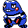

#352
Croagunk
PoisonFighting
Abilities: Dry Skin, Poison Touch
Base stats BST 300
HP48
Attack61
Defense40
Speed50
Sp. Atk61
Sp. Def40
Evolution
dbbw EVOLVE_LEVEL, 37, TOXICROAKLevel-up learnset
LevelMoveType
Lv. 1AstonishGhost
Lv. 4Mud SlapGround
Lv. 7Poison StingPoison
Lv. 16Faint AttackDark
Lv. 16Low KickFighting
Lv. 20VenoshockPoison
Lv. 22SwaggerNormal
Lv. 28Poison JabPoison
Lv. 31Drain PunchFighting
Lv. 34Nasty PlotDark
Lv. 36ToxicPoison
Lv. 37Sucker PunchDark
Lv. 40Cross ChopFighting
Lv. 43Sludge BombPoison
Lv. 49Gunk ShotPoison